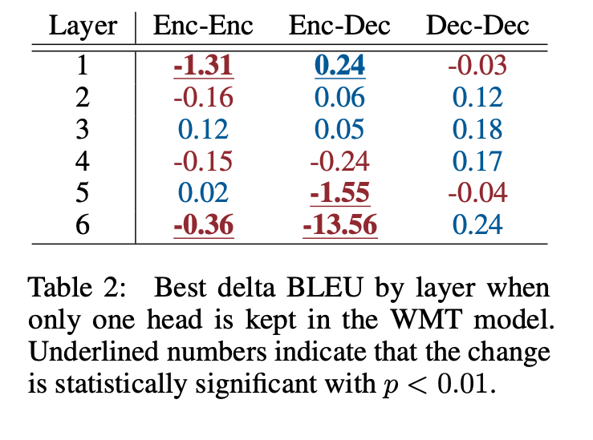
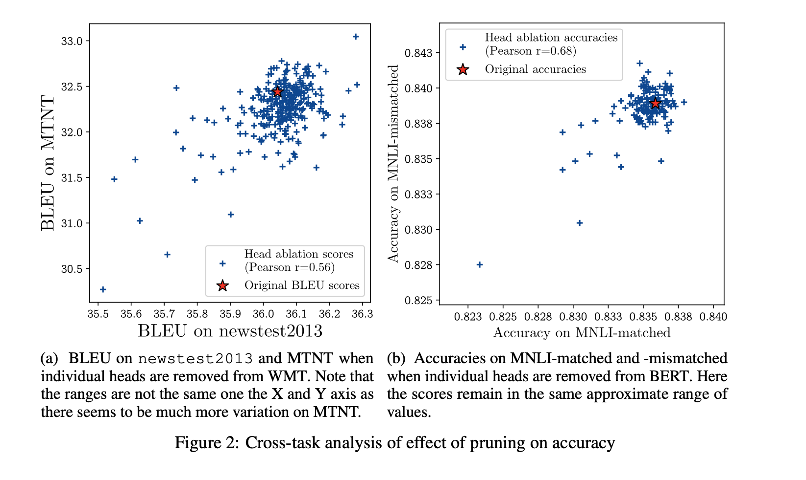
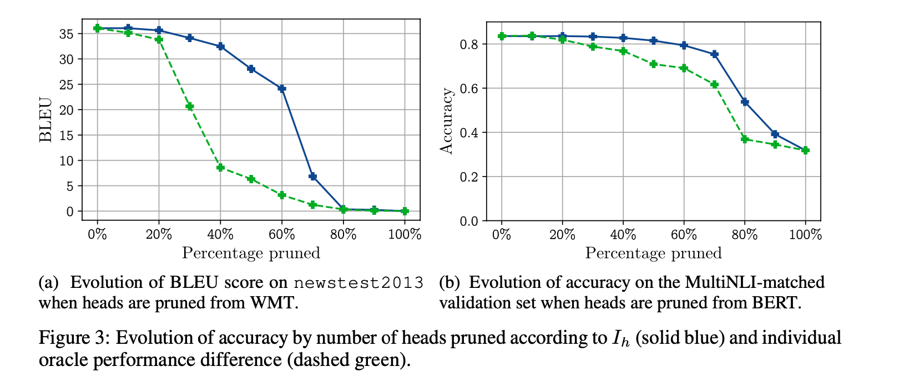
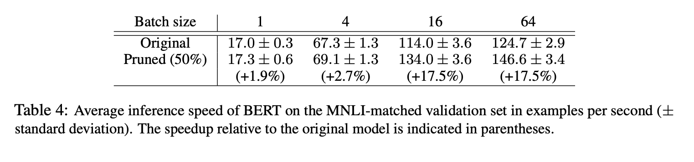

1. Read the title and make an opinion of what’s in the paper (e.g., the area, the task)
Year: 2019
Are Sixteen Heads Really Better than One?
Looks like an analysis of NLP attention heads. What are the benefits of keeping 16 heads, etc.
2. Read the abstract well and form a hypothesis of
- What’s new in the paper?
- Do you have a clear overview about what the paper is all about?
with each attention “head” potentially focusing on different parts of the input, which makes it possible to express sophisticated functions beyond the simple weighted average.
A description of the expressiveness of the multi-head attention mechanism.
in practice, a large percentage of attention heads can be removed at test time without significantly impacting performance.
This as they say is a bit surprising, based on the assumption that complicated relationships are being formed with language that must be understood.
In fact, some layers can even be reduced to a single head.
They go on to describe the memory and speed benefits of reducing the headcount.
3. Look at the images and extract a set of “questions” about what is not clear about their method from the images. Now your job is to answer these questions by reading the paper.
Table2 seems to show their main point the clearest. They argue that MHA matters most for Enc-Dec setups, and is either statistically insignificant, or fairly minor for models not setup like Enc-Dec.

Figure 2 shows the cross task performance as they prune heads. Essentially it proves that their performance numbers are not anomalous to just they task they are pruning on.

Finally the figure 3 shows the performance as heads are successively pruned. It drops off a bit sooner than I would prefer, making the method only marginally useful in my opinion, but if you are trying to squeeze performance out of your models, this is important data.

4. Read the method aiming to answer your “questions” about the paper. Focus on understanding only the things relevant for the story (i.e., to understand the contribution).
They give a quick description of MHA, specifically showing they added a masking term which is a binary flag to enable or disable masking heads. They then do a number of studies with different masked heads to compare performance.
Pruning is done via a proxy score of importance by looking at the sensitivity of the loss compared to the masking variable.
They note that this formulation is a classic pruning technique used early in the 90’s.
5. Read the experiments to convince you that the show results are caused by their claim. Be aware that the experiments highlighted are the best scenarios and are fully hyper-parameter tuned.
They show a performance benchmark where they achieve a speedup of 17.5% but that is only at higher batch sizes, and it doesn’t report performance lost in the meantime.

6. Make sure you answered all your questions. Did the authors convince you that their story has the effect that they claim?
They conclude by arguing this information could lead to better utilization of parameters in attention. I don’t know if that would be totally true. I think that it is good research, but it seems to me that the performance hit happens quite quickly showing that there is truly loss happening in the model by pruning. There are probably better techniques to reduce complexity of models (like distillation), that can give comparable speed and memory boosts without suffering performance; however, this paper was well written and a good read for this information.